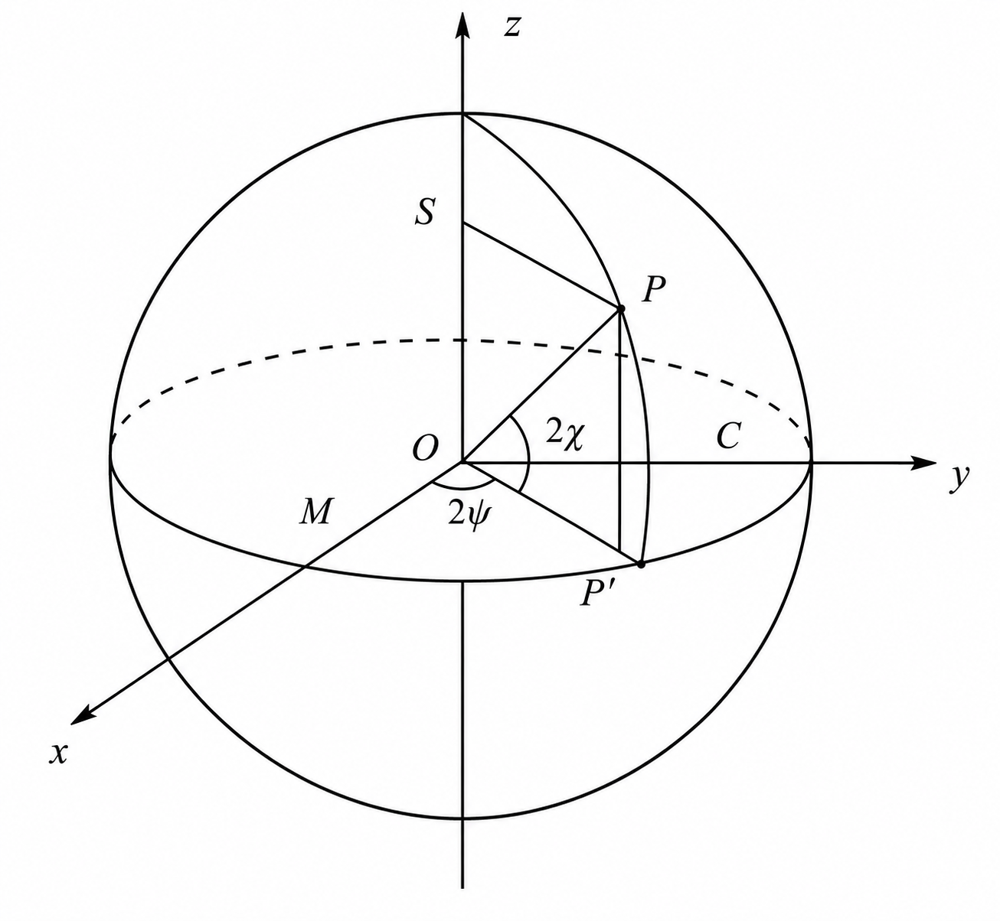

平面电磁波是横电磁波，其光场矢量的振动方向与光波传播方向垂直.
光振动方向相对光传播方向不对称的性质.
偏振赋予光场矢量属性.
光波的偏振特性是横波区别于纵波的最明显标志.
单色平面波必是偏振光.
设光波沿\(z\)方向传播，电场矢量为
$$\boldsymbol{E} = \boldsymbol{E}_0 \cos(\omega t - kr + \phi_0)$$为表征光波的偏振特性，将其表示为沿\(x, y\)方向上振动的两个独立分量的线性组合
$$\boldsymbol{E} = \boldsymbol{i}\boldsymbol{E}_x + \boldsymbol{j}\boldsymbol{E}_y$$ $$E_x = E_{0x}\cos(\omega t - kr + \phi_x) = E_{0x}e^{-i(\omega t - kr + \phi_x)}$$ $$E_y = E_{0y}\cos(\omega t - kr + \phi_y) = E_{0y}e^{-i(\omega t - kr + \phi_y)}$$令\(\phi = \phi_y - \phi_x, \omega t - kr + \phi_x = \theta\)
$$E_x = E_{0x}\cos\theta \Rightarrow \cos\theta = \frac{E_x}{E_{0x}}$$ $$\sin\theta = \sqrt{1 - (\frac{E_x}{E_{0x}})^2}$$ $$E_y = E_{0y}\cos(\theta + \phi) = E_{0y}(\cos\theta\cos\phi - \sin\theta\sin\phi)$$ $$(\frac{E_y}{E_{0y}}) = \frac{E_x}{E_{0x}}\cos\phi - \sqrt{1 - (\frac{E_x}{E_{0x}})^2}\sin \phi$$ $$[1 - (\frac{E_x}{E_{0x}})]\sin^2\phi = (\frac{E_x}{E_{0x}})^2\cos^2\phi - 2(\frac{E_x}{E_{0x}})(\frac{E_y}{E_{0y}})\cos\phi + (\frac{E_y}{E_{0y}})^2$$ $$\sin^2\phi = (\frac{E_x}{E_{0x}})^2 - 2(\frac{E_x}{E_{0x}})(\frac{E_y}{E_{0y}})\cos\phi + (\frac{E_y}{E_{0y}})^2$$迎着光传播方向看：
\(\boldsymbol{E}\)顺时针旋转，称为右旋偏振光.
\(\boldsymbol{E}\)逆时针旋转，称为左旋偏振光.
条件：\(\phi = m\pi(m = 0, \pm 1, \pm 2, \cdots)\)
当\(m\)为偶数时，光场在\(Ⅰ,Ⅲ\)象限内振动.
当\(m\)为奇数时，光场在\(Ⅱ,Ⅳ\)象限内振动.
条件：\(E_{0x} = E_{0y} = E'_0, \phi = m\pi/2(m = \pm 1, \pm 3, \pm 5\cdots)\)
\(\phi = \frac{\pi}{2}\)时，为右旋偏振光.
取：
$$\begin{cases} x = \cos\theta \gt 0\\ y = \cos(\theta + \phi) \gt 0 \end{cases}$$当\(\phi = \frac{\pi}{2} + 2k\pi,~k = \pm1,\pm2,\cdots\)时，令：
$$\theta \in (-\frac{\pi}{2},0)$$ $$\therefore \theta + \phi \in (0,\frac{\pi}{2})$$故：
$$\begin{cases} x' = \cos(\theta + \omega\Delta t) \gt x\\ y' = \cos(\theta + \phi + \omega\Delta t) \lt y \end{cases}$$\(\phi=-\frac{\pi}{2}\)时，为左旋偏振光.
\(2m\pi \lt \phi \lt (2m+1)\pi\)：右旋椭圆偏振光.
\((2m-1)\pi \lt \phi \lt 2m\pi\)：左旋椭圆偏振光.
一种用于描述光束偏振态的方法.
$$\left[\begin{matrix}E_x\\E_y\end{matrix}\right] = \left[\begin{matrix}E_{0x}e^{-i\phi_x}\\E_{0y}e^{-i\phi_y}\end{matrix}\right]$$这个矩阵称为Jones矢量.
\(Ⅰ，Ⅲ\)象限内的线偏振光此时\(\phi_x = \phi_y = \phi_0\)
$$\left[\begin{matrix}E_x\\E_y\end{matrix}\right] = \left[\begin{matrix}E_{0x}\\E_{0y}\end{matrix}\right]e^{-i\phi_0}$$ 右旋、左旋圆偏振光此时\(\phi_y - \phi_x = \pm \frac{\pi}{2}, E_{0x} = E_{0y} = E_0\)
$$\left[\begin{matrix}E_x\\E_y\end{matrix}\right] = \left[\begin{matrix}1\\\mp i\end{matrix}\right]E_0e^{-i\phi_x}$$[补充]Jones矩阵法由Jones于1941年提出.
任一椭圆偏振光仅需两个方位角就可完全决定其偏振态，而两个方位角可以用球面上的经度与纬度表示，所以球面上的一个点就可以代表一个偏振态，球上所有点的组合则代表了所有可能的偏振态.

\(\psi\)为椭圆偏振光的椭圆长轴与x轴的夹角.
\(\tan\chi = \pm b/a\)，\(2a, 2b\)分别为椭圆的长轴与短轴.
庞加莱球有如下结论：
1、赤道上（\(\chi = 0\)）任一点代表不同振动方向的线偏振光.
2、球的北极（\(\chi = \pi/4\)）表示右旋圆偏振；南极（\(\chi = -\pi/4\)）表示左旋圆偏振.
3、北半球上每个点表示右旋椭圆偏振；南半球上每个点表示左旋椭圆偏振.
椭圆相应的方位角与椭圆度分别为该点经度与纬度值的一，因此\(\phi \in \mathbb{C}\)的所有点表示所有方位角相同而椭圆度不同的椭圆偏振；\(\chi\in\mathbb{C}\)的所有点表示所有椭圆度相同而方位角不同的椭圆偏振.
对于一完全偏振光，斯托克斯四参量为：
$$I = E_x^2 + E_y^2$$ $$M = E_x^2 - E_y^2$$ $$C = 2E_xE_y\cos\delta$$ $$S = 2E_xE_y\sin\delta$$由于为完全偏振光，因此有：
$$I^2 = M^2 + C^2 + S^2$$进而：
$$M = I\cos(2\chi)\cos(2\phi)$$ $$C = I\cos(2\chi)\sin(2\phi)$$ $$S = I\sin(2\chi)$$即为庞加莱球上任一点P的直角坐标分量..
庞加莱球和斯托克斯矢量都能表示部分偏振光及完全非偏振光.
对于部分偏振光，有：
$$0\lt M^2 + C^2 + S^2 \lt I^2$$定义偏振光的偏振度P为：
$$P = \frac{\sqrt{M^2 + C^2 + S^2}}{I}$$同时，部分偏振光可以理解为完全偏振光+自然光：
$$\left[\begin{matrix}I\\M\\C\\S\end{matrix}\right] = \left[\begin{matrix}I - (M^2 + C^2 + S^2)^{1/2}\\0\\0\\0\end{matrix}\right] + \left[\begin{matrix}(M^2 + C^2 + S^2)^{1/2}\\M\\C\\S\end{matrix}\right]$$ $$\left[\begin{matrix}(M^2 + C^2 + S^2)^{1/2}\\M\\C\\S\end{matrix}\right] = (M^2 + C^2 + S^2)^{1/2}\left[\begin{matrix}1\\\cos(2\chi)\cos(2\phi)\\\cos(2\chi)\sin(2\phi)\\\sin(2\chi)\end{matrix}\right]$$故部分偏振光的斯托克斯矢量为：
$$\left[\begin{matrix}I\\M\\C\\S\end{matrix}\right] = I\left[\begin{matrix}1\\P\cos(2\chi)\cos(2\phi)\\P\cos(2\chi)\sin(2\phi)\\P\sin(2\chi)\end{matrix}\right]$$故：
[补充]庞加莱球由庞加莱于1892年提出.